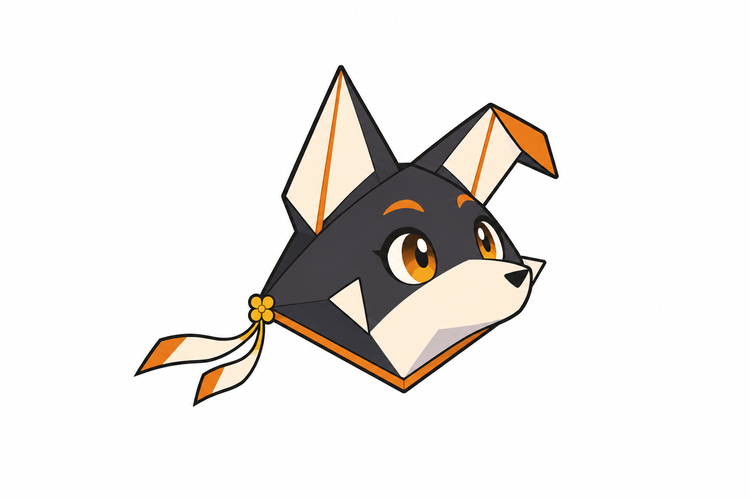
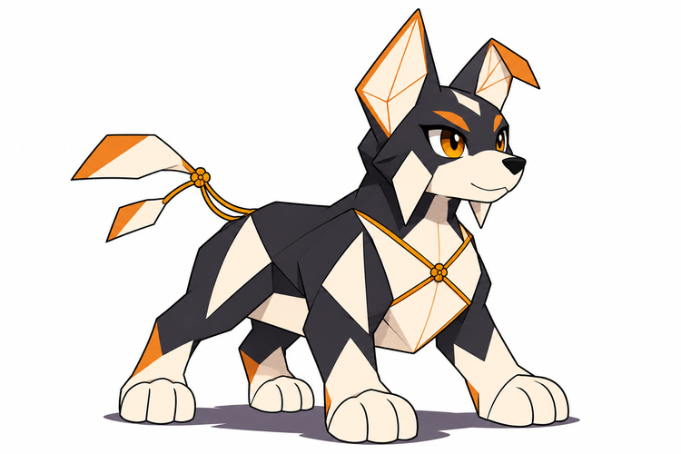
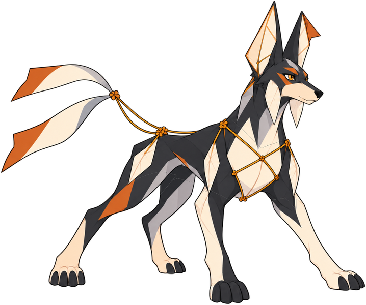
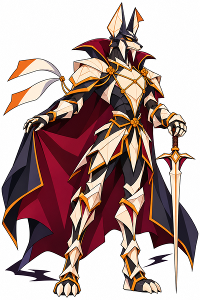

Dobrinco · Bebê

Aprende a equilibrar a primeira armação.
BriefBebê e criança em avaliação. Dóber jovem e Dobrácula adulto: estágios definidos pelo autor. Sem integração.

Aprende a equilibrar a primeira armação.
Brief
Passa a sustentar quatro apoios e tensionar o losango do peito.
Brief
O autor definiu explicitamente que a forma existente é jovem.
Brief
Forma adulta de Trevas inspirada em Drácula aprovada visualmente pelo autor.
Brief